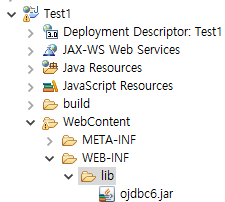
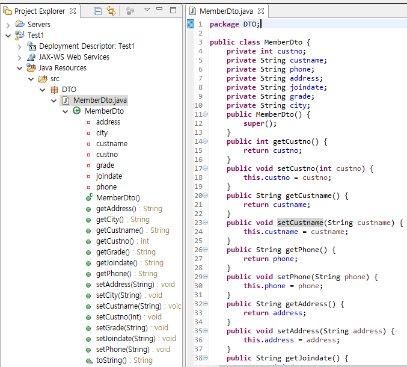

경로 : C:\oraclexe\app\oracle\product\11.2.0\server\jdbc\lib

1. DB를 연결하기전에 C드라이브 oraclexe에서 jdbc6.jar 파일을 찾자
경로 : C:\oraclexe\app\oracle\product\11.2.0\server\jdbc\lib
2. eclipse의 src/main/webapp/WEB-INF/lib 경로에 넣어주자

3. 위쪽의 Java Resources src/main/java에 DAO,DTO 패키지를 만들자

4. 아까 만든 테이블 컬럼값에 맞게 DTO를 만들어주고 기본생성자,Getter Setter등 선언
date나 char의 경우는 String으로 선언해줘도 무방하다